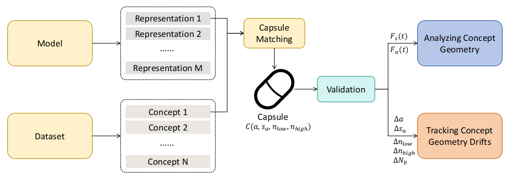
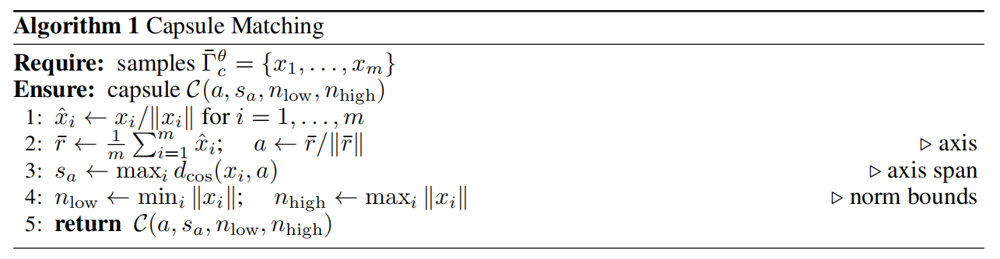
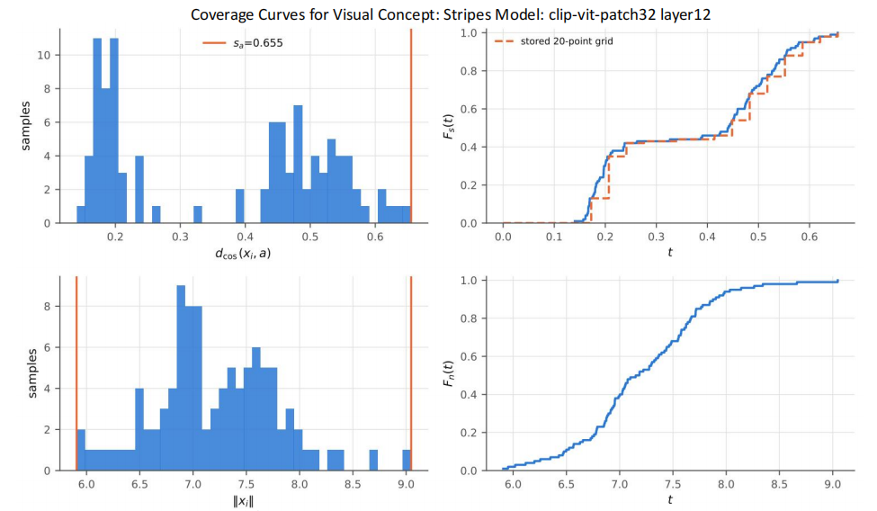
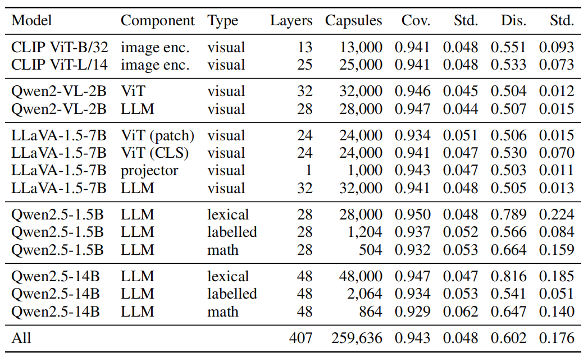
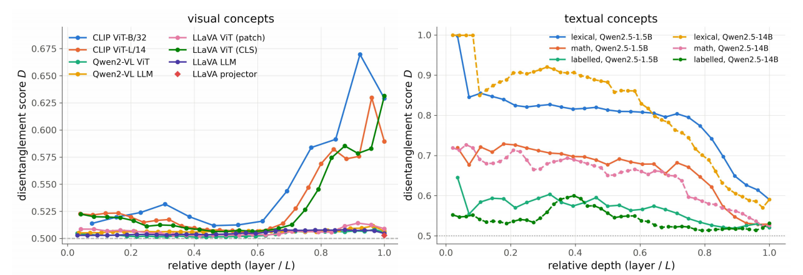
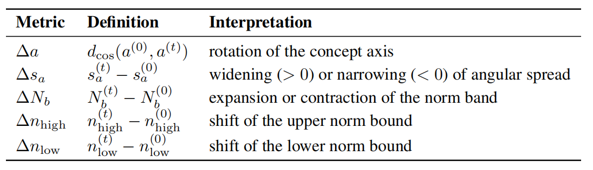
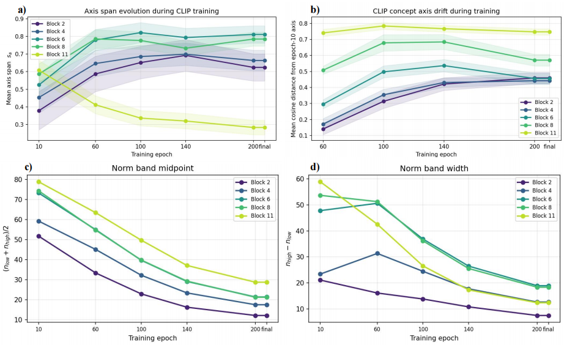
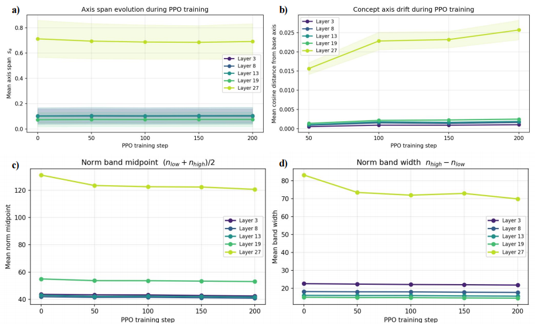
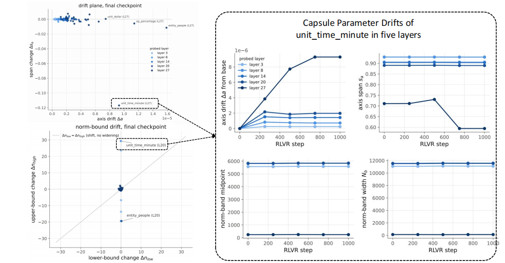

Paper Walkthroughs
Capsule Lens: Locating and Tracking Concept Geometry in Model Representations
We match a concept geometry with understandable shapes to understand the concept geometry and how it changes.
Why Study Concept Geometry?
Mechanistic interpretability often starts from a simple question: what information is represented inside a model? Existing tools answer this in many useful ways. Logit-based lenses map hidden states back to tokens, language-based methods decode representations into natural-language descriptions, and sparse autoencoders decompose activations into interpretable features.
But there is another question that is equally fundamental: how does a concept actually occupy the representation space? Is it concentrated around a direction? Does it spread over a broad region? Does it separate from other concepts only in late layers? And, once the model starts training, how does this geometry move?
Capsule Lens is designed around two complementary settings:
- Static representations: locate and characterize the geometry occupied by a concept at a given model state.
- Dynamic representations: track how that geometry changes across training checkpoints.

Overview of Capsule Lens. Concept representations are matched with a compact capsule geometry, validated on held-out data, and then used either to analyze static concept geometry or to track geometric drifts during training.
What Is a Concept Geometry?
We begin with a deliberately simple definition. Let a model \(\phi_\theta\) map samples from a dataset \(\mathcal{D}\) into a representation space \(\mathbb{R}^d\). A concept \(c\) is a binary indicator \(I_c\) on the dataset, and its positive set contains the samples exhibiting that concept:
The corresponding concept geometry is the region occupied by those positive samples in representation space:
This reframes concept-based interpretability as a geometric problem. Once we collect representations of samples sharing the same concept, we obtain a point cloud. The question becomes: what compact geometric object can summarize this cloud while remaining interpretable and easy to compare across layers and checkpoints?
Why a Capsule?
Capsule Lens approximates a concept geometry using a simple parametric region:
Geometrically, a capsule is an angular cone intersected with a norm shell. Each parameter has a direct interpretation:
- Axis \(a\): the central direction of the concept representations.
- Axis span \(s_a\): how broadly the concept spreads around that direction.
- Lower and upper norm bounds \(n_{\mathrm{low}},n_{\mathrm{high}}\): the magnitude interval occupied by the concept.
- Norm band \(N_b=n_{\mathrm{high}}-n_{\mathrm{low}}\): the width of that magnitude interval.
The purpose is not to claim that every concept is literally a perfect capsule. The capsule is a measurement instrument: a compact geometry whose parameters can be estimated, interpreted, validated, and compared.
Capsule Matching
Given a finite set of concept representations, Capsule Lens fits the capsule directly in closed form. Intuitively, it first estimates the concept's central direction, then measures how far the samples spread around that direction, and finally records the range of representation norms.

Capsule matching estimates the axis, angular span, and norm bounds directly from the sampled concept representations. The procedure is closed form and requires no iterative optimization.
This gives a compact summary of the concept geometry that can be compared across layers, model components, or training checkpoints.
Looking Inside the Capsule: Coverage Curves
The capsule parameters describe the boundary of the fitted region, but two concepts with similar boundaries may still distribute their samples very differently inside those boundaries. Capsule Lens therefore introduces two empirical coverage curves.
Span Curve
The span curve asks how quickly samples are covered as we widen the cone around the fitted axis:
A steep rise near \(t=0\) indicates a concept concentrated tightly around its axis. A late rise indicates a genuinely broad angular distribution. Multiple sharp rises separated by plateaus can reveal multiple angular clusters.
Norm Curve
The norm curve similarly tracks how the samples populate the norm interval:
Together, the fitted capsule and these curves separate two questions: how large is the region? and how are representations distributed inside it?

Coverage curves for the visual concept stripes at layer 12 of CLIP ViT-B/32. The angular distribution contains two separated clusters, producing two sharp rises in the span curve, while the norm distribution is comparatively smooth.
Does the Capsule Actually Generalize?
A geometric approximation is useful only if it describes more than the samples used to fit it. We therefore split each concept into disjoint fitting and validation sets and evaluate two complementary properties.
Held-out Coverage
Held-out coverage measures whether unseen examples of the same concept fall inside the fitted capsule:
Disentanglement
Disentanglement asks whether samples inside the capsule actually belong to the target concept rather than unrelated concepts:
We evaluate these quantities across visual and textual concepts, including CLIP image encoders, multimodal models, and language models. Across 259,636 fitted capsules, the overall mean held-out coverage is 0.943.

Held-out validation across 259,636 capsules. Coverage remains consistently high across diverse models, components, and concept types, while disentanglement varies substantially across settings.
The important distinction is that coverage and disentanglement measure different things. A capsule may reliably capture unseen examples of a concept while still overlapping strongly with other concepts. In the experiments, visual concept capsules generally achieve high coverage but remain relatively entangled, whereas lexical concepts in LLMs are much more strongly separated.
Static Representations: How Does Concept Geometry Change Across Depth?
Once concept geometry can be located and validated, we can ask a natural layer-wise question: where in a network do concepts become geometrically separated?

Concept disentanglement across model depth. Several visual encoders exhibit strong late-layer separation, whereas textual concepts in Qwen2.5 models generally become more entangled toward later layers.
The two modalities show contrasting depth profiles. For visual representations, several encoders exhibit a pronounced rise in disentanglement near the final layers. In other words, concept regions that overlap strongly earlier in the network become increasingly separated near the output of the vision encoder.
Textual concepts show a different pattern. In Qwen2.5 models, lexical concepts are highly disentangled in early layers but become progressively more entangled with depth. Labelled semantic concepts and mathematical concepts show weaker but related trends. The main point is not that one profile is universally preferable, but that Capsule Lens turns these layer-wise changes into directly measurable geometry.
From Static Geometry to Dynamic Geometry
The same capsule parameters that describe a concept at one model state can also be compared across training checkpoints. This turns Capsule Lens from a static geometric description into a tool for tracking representation dynamics.

Capsule drift metrics compare the same concept across checkpoints: axis rotation, angular widening or narrowing, and shifts or contractions of the norm band.
Given a base capsule and a capsule fitted at checkpoint \(t\), we track:
- \(\Delta a\): rotation of the concept axis.
- \(\Delta s_a\): widening or narrowing of the angular spread.
- \(\Delta N_b\): expansion or contraction of the norm band.
- \(\Delta n_{\mathrm{high}}\) and \(\Delta n_{\mathrm{low}}\): shifts of the upper and lower norm boundaries.
Aggregated across concepts and layers, these quantities tell us where training changes the model, which concepts are affected, and what kind of geometric change occurs.
Case Study I: CLIP Pretraining
We first ask what happens when concept geometry is formed during pretraining from scratch. A standard CLIP model is trained with a contrastive objective, and concept capsules are tracked across multiple vision-transformer blocks and training checkpoints.

CLIP pretraining produces broad geometric restructuring throughout the network. Concept axes rotate at all probed depths, early and middle layers broaden, while the final block becomes substantially more concentrated.
The changes are large and distributed across the network. Concept axes rotate substantially in every probed block. The angular behavior is strongly depth dependent: blocks 2–8 generally widen, whereas the final block contracts sharply. Norm bands also contract steadily during training.
The per-concept drift is comparatively uniform, suggesting that pretraining does not merely adjust a few isolated concepts. Instead, it produces a broad, network-wide restructuring of concept geometry.
Case Study II: PPO Post-training on Visual Question Answering
We next study reinforcement-learning post-training of a vision-language model using PPO on visual question answering. Here the picture changes substantially.

PPO-induced geometric changes are much more localized than those observed in pretraining. Most layers remain close to the base representation, while the final layer undergoes the dominant axis rotation and norm-band contraction.
Axis spans remain nearly unchanged across training. Axis drift, however, is concentrated almost entirely in the final layer, while earlier layers remain very close to their base geometry. The final-layer norm band contracts quickly during the first stage of PPO training and then stabilizes even while its axis continues to rotate.
Compared with pretraining, PPO therefore induces smaller and much more localized geometric restructuring, concentrated primarily near the terminal representation.
Case Study III: RLVR on Mathematical Reasoning
Finally, we study reinforcement learning with verifiable rewards on mathematical reasoning. We train Qwen2.5-1.5B with GRPO on GSM8K and track 18 mathematical concepts across layers and checkpoints.

RLVR produces sparse, concept-specific geometric change. Most concept-layer pairs stay near their base geometry, while a small subset shows pronounced concentration or norm-bound shifts.
This reveals a third geometric regime. Most concept-layer pairs barely move, but a small number exhibit strong changes at specific depths. One representative example is unit_time_minute: its final-layer angular span contracts sharply late in training, while its axis orientation and norm geometry remain comparatively stable.
This motivates what we call concept-specific concentration: RLVR can selectively sharpen the geometry of particular concepts at particular layers while leaving most concept regions almost unchanged.
Three Training Regimes, Three Geometric Signatures
Putting the three case studies together gives a simple geometric picture of how very different training procedures reshape representations:
- CLIP pretraining: broad, network-wide restructuring.
- PPO post-training: small and localized restructuring, concentrated near the final layer.
- RLVR: sparse, concept-specific restructuring at particular layers.
The important point is that these differences are not visible from task accuracy alone. Capsule Lens provides a common geometric coordinate system in which different forms of representation change can be located and compared.
Takeaway
Capsule Lens matches concept geometry with simple shapes and tracks those shapes to understand how concept geometry changes. A concept is treated as a region in representation space and approximated by a simple capsule with interpretable parameters. The fitted region can be validated on held-out samples, its internal distribution can be examined with coverage curves, and its parameters can be compared across layers and training checkpoints.
This gives one framework for two related questions: where does a concept live in a model? and how does training reshape that concept geometry? Across static representations and three very different training pipelines, the resulting geometric trajectories reveal structure that is difficult to summarize with aggregate model behavior alone.
More experiments, robustness analyses, concept construction details, and ablations are available in the full preprint. Check it out on arXiv.